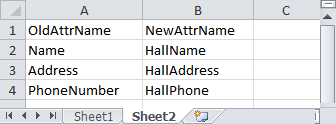
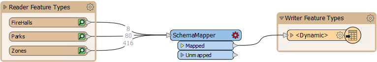
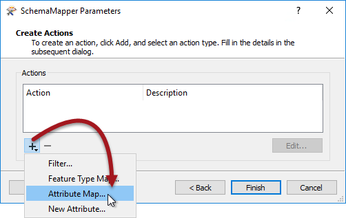
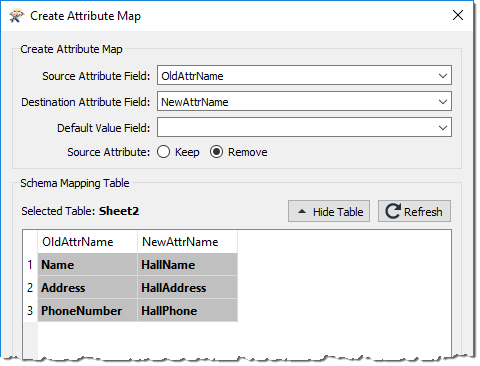

After completing this lesson, you’ll be able to:
You may run into schema mapping issues if you define your schema using an external source. We saw this in the previous exercise, where the writer feature type could successfully adopt an externally-defined schema, but the schema of the features entering the feature type didn't match, so all the values were missing. You can address this problem using the SchemaMapper transformer, which converts the existing schema of features to a new structure based on mappings defined in an external lookup table. It's a bit like mapping attributes manually using a transformer like the AttributeManager, but the advantage is you can define the mapping in an external source.
The planning team has decided they should rename some attributes, so open the spreadsheet and rename the following attributes for the FireHalls feature type:
If you run the workspace now, it will run to completion, but there are no values in the renamed fields of the FireHall table. That’s because FME had no way to tell how to map the source data to the new schema.
We could add an AttributeRenamer transformer to handle this change, but the better way is to use the SchemaMapper. That way, the workspace is a little more dynamic.
So, in sheet 2 of the spreadsheet, enter:
| OldAttrName | NewAttrName |
| Name | HallName |
| Address | HallAddress |
| PhoneNumber | HallPhone |

Then save the spreadsheet.
Open the starting workspace in FME Workbench (2022.1 or later), or continue using the workspace from the previous exercise.
Add a SchemaMapper transformer to the workspace, connected to the output feature type:

Inspect the SchemaMapper's parameters. It is a wizard rather than a single dialog. Configure the Locate Schema Mapping Table step as follows:
| Format |
Microsoft Excel |
| Dataset | https://s3.amazonaws.com/FMEData/FMEData/Resources/DesktopAdvanced/CommunityMapAdvancedSchema.xlsx or C:\FMEData\Resources\DesktopAdvanced\CommunityMapAdvancedSchema.xlsx |
| Parameters > Sheets to Read | Uncheck Sheet1 |
In the second panel, click the plus (+) icon and choose Attribute Map:

When prompted, select OldAttrName as the source field and NewAttrName as the Destination field. For Source Attribute, choose Remove. This will remove the Source attributes (i.e., we are renaming, not copying):

These settings tell FME to rename attributes with the OldAttrName to attributes with a NewAttrName. Click OK to close this dialog, then click Finish. Now save and rerun the workspace.
Run the workspace. This time the output will have its attributes properly mapped. So now the planning department can translate their data, decide on the output schema, and dynamically map source to destination attributes, all by editing this one Excel spreadsheet. If the existing source attributes change, they can be handled by editing the same spreadsheet.